if(!require(pacman))
install.packages("pacman")Loading required package: pacmanpacman::p_load(tidyverse, rpart, rpart.plot, caret,
lattice, FSelector, sampling, pROC, mlbench)R Exercise 3 Part 1
Install the packages used in this chapter:
if(!require(pacman))
install.packages("pacman")Loading required package: pacmanpacman::p_load(tidyverse, rpart, rpart.plot, caret,
lattice, FSelector, sampling, pROC, mlbench)Classification is a machine learning task with the goal to learn a predictive function of the form y=f(x),
where x is called the attribute set and y the class label. The attribute set consists of feature which describe an object. These features can be measured using any scale (i.e., nominal, interval, …). The class label is a nominal attribute. It it is a binary attribute, then the problem is called a binary classification problem.
Classification learns the classification model from training data where both the features and the correct class label are available. This is why it is called a supervised learning problem.
A related supervised learning problem is regression, where y is a number instead of a label. Linear regression is a very popular supervised learning model, however, we will not talk about it here since it is taught in almost any introductory statistics course.
This chapter will introduce decision trees, model evaluation and comparison, feature selection, and then explore methods to handle the class imbalance problem.
You can read the free sample chapter from the textbook [@Tan2005]: Chapter 3. Classification: Basic Concepts and Techniques
To demonstrate classification, we will use the Zoo dataset which is included in the R package mlbench (you may have to install it). The Zoo dataset containing 17 (mostly logical) variables for 101 animals as a data frame with 17 columns (hair, feathers, eggs, milk, airborne, aquatic, predator, toothed, backbone, breathes, venomous, fins, legs, tail, domestic, catsize, type). The first 16 columns represent the feature vector x and the last column called type is the class label y. We convert the data frame into a tidyverse tibble (optional).
data(Zoo, package="mlbench")
head(Zoo) hair feathers eggs milk airborne aquatic predator toothed backbone
aardvark TRUE FALSE FALSE TRUE FALSE FALSE TRUE TRUE TRUE
antelope TRUE FALSE FALSE TRUE FALSE FALSE FALSE TRUE TRUE
bass FALSE FALSE TRUE FALSE FALSE TRUE TRUE TRUE TRUE
bear TRUE FALSE FALSE TRUE FALSE FALSE TRUE TRUE TRUE
boar TRUE FALSE FALSE TRUE FALSE FALSE TRUE TRUE TRUE
buffalo TRUE FALSE FALSE TRUE FALSE FALSE FALSE TRUE TRUE
breathes venomous fins legs tail domestic catsize type
aardvark TRUE FALSE FALSE 4 FALSE FALSE TRUE mammal
antelope TRUE FALSE FALSE 4 TRUE FALSE TRUE mammal
bass FALSE FALSE TRUE 0 TRUE FALSE FALSE fish
bear TRUE FALSE FALSE 4 FALSE FALSE TRUE mammal
boar TRUE FALSE FALSE 4 TRUE FALSE TRUE mammal
buffalo TRUE FALSE FALSE 4 TRUE FALSE TRUE mammalNote: data.frames in R can have row names. The Zoo data set uses the animal name as the row names. tibbles from tidyverse do not support row names. To keep the animal name you can add a column with the animal name.
library(tidyverse)
as_tibble(Zoo, rownames = "animal")# A tibble: 101 × 18
animal hair feathers eggs milk airborne aquatic predator toothed backbone
<chr> <lgl> <lgl> <lgl> <lgl> <lgl> <lgl> <lgl> <lgl> <lgl>
1 aardva… TRUE FALSE FALSE TRUE FALSE FALSE TRUE TRUE TRUE
2 antelo… TRUE FALSE FALSE TRUE FALSE FALSE FALSE TRUE TRUE
3 bass FALSE FALSE TRUE FALSE FALSE TRUE TRUE TRUE TRUE
4 bear TRUE FALSE FALSE TRUE FALSE FALSE TRUE TRUE TRUE
5 boar TRUE FALSE FALSE TRUE FALSE FALSE TRUE TRUE TRUE
6 buffalo TRUE FALSE FALSE TRUE FALSE FALSE FALSE TRUE TRUE
7 calf TRUE FALSE FALSE TRUE FALSE FALSE FALSE TRUE TRUE
8 carp FALSE FALSE TRUE FALSE FALSE TRUE FALSE TRUE TRUE
9 catfish FALSE FALSE TRUE FALSE FALSE TRUE TRUE TRUE TRUE
10 cavy TRUE FALSE FALSE TRUE FALSE FALSE FALSE TRUE TRUE
# ℹ 91 more rows
# ℹ 8 more variables: breathes <lgl>, venomous <lgl>, fins <lgl>, legs <int>,
# tail <lgl>, domestic <lgl>, catsize <lgl>, type <fct>You will have to remove the animal column before learning a model! In the following I use the data.frame.
I translate all the TRUE/FALSE values into factors (nominal). This is often needed for building models. Always check summary() to make sure the data is ready for model learning.
# change the logical or boolean variables to factor levels
Zoo <- Zoo |>
mutate(across(where(is.logical), factor, levels = c(TRUE, FALSE))) |>
mutate(across(where(is.character), factor))Warning: There was 1 warning in `mutate()`.
ℹ In argument: `across(where(is.logical), factor, levels = c(TRUE, FALSE))`.
Caused by warning:
! The `...` argument of `across()` is deprecated as of dplyr 1.1.0.
Supply arguments directly to `.fns` through an anonymous function instead.
# Previously
across(a:b, mean, na.rm = TRUE)
# Now
across(a:b, \(x) mean(x, na.rm = TRUE))# always check data
summary(Zoo) hair feathers eggs milk airborne aquatic predator
TRUE :43 TRUE :20 TRUE :59 TRUE :41 TRUE :24 TRUE :36 TRUE :56
FALSE:58 FALSE:81 FALSE:42 FALSE:60 FALSE:77 FALSE:65 FALSE:45
toothed backbone breathes venomous fins legs
TRUE :61 TRUE :83 TRUE :80 TRUE : 8 TRUE :17 Min. :0.000
FALSE:40 FALSE:18 FALSE:21 FALSE:93 FALSE:84 1st Qu.:2.000
Median :4.000
Mean :2.842
3rd Qu.:4.000
Max. :8.000
tail domestic catsize type
TRUE :75 TRUE :13 TRUE :44 mammal :41
FALSE:26 FALSE:88 FALSE:57 bird :20
reptile : 5
fish :13
amphibian : 4
insect : 8
mollusc.et.al:10 Recursive Partitioning (similar to CART) uses the Gini index to make splitting decisions and early stopping (pre-pruning).
library(rpart)tree_default <- Zoo |>
rpart(type ~ ., data = _)
tree_defaultn= 101
node), split, n, loss, yval, (yprob)
* denotes terminal node
1) root 101 60 mammal (0.41 0.2 0.05 0.13 0.04 0.079 0.099)
2) milk=TRUE 41 0 mammal (1 0 0 0 0 0 0) *
3) milk=FALSE 60 40 bird (0 0.33 0.083 0.22 0.067 0.13 0.17)
6) feathers=TRUE 20 0 bird (0 1 0 0 0 0 0) *
7) feathers=FALSE 40 27 fish (0 0 0.12 0.32 0.1 0.2 0.25)
14) fins=TRUE 13 0 fish (0 0 0 1 0 0 0) *
15) fins=FALSE 27 17 mollusc.et.al (0 0 0.19 0 0.15 0.3 0.37)
30) backbone=TRUE 9 4 reptile (0 0 0.56 0 0.44 0 0) *
31) backbone=FALSE 18 8 mollusc.et.al (0 0 0 0 0 0.44 0.56) *I find this hard to read. Where are 4,5 and 8,9,10,11,12,13 and so?
Notes:
|> supplies the data for rpart. Since data is not the first argument of rpart, the syntax data = _ is used to specify where the data in Zoo goes. The call is equivalent to tree_default <- rpart(type ~ ., data = Zoo).
The formula models the type variable by all other features is represented by ..
the class variable needs a factor (nominal) or rpart will create a regression tree instead of a decision tree. Use as.factor() if necessary
Plotting
library(rpart.plot)
rpart.plot(tree_default, extra = 2)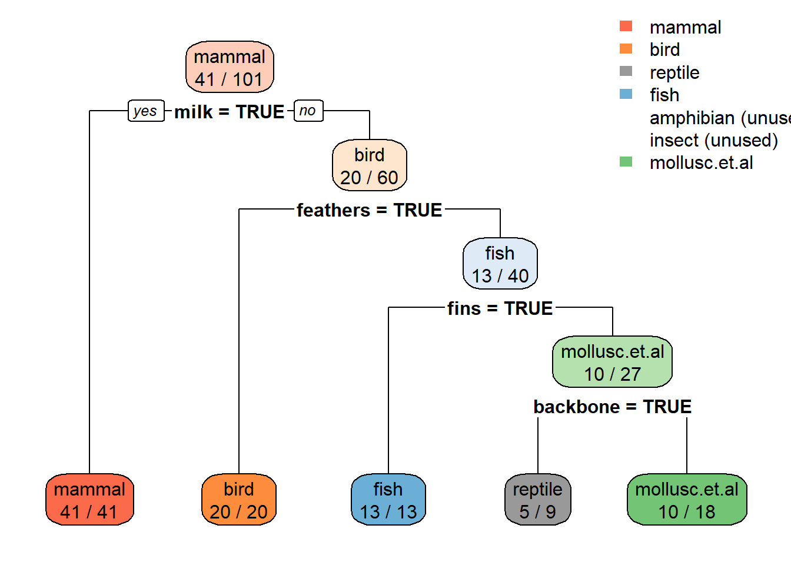
I find this easier to understand than the table.
Note: extra=2 prints for each leaf node the number of correctly classified objects from data and the total number of objects from the training data falling into that node (correct/total).
To create a full tree, we set the complexity parameter cp to 0 (split even if it does not improve the tree) and we set the minimum number of observations in a node needed to split to the smallest value of 2 (see: ?rpart.control). Note: full trees overfit the training data!
tree_full <- Zoo |>
rpart(type ~ . , data = _,
control = rpart.control(minsplit = 2, cp = 0))
rpart.plot(tree_full, extra = 2,
roundint=FALSE,
box.palette = list("Gy", "Gn", "Bu", "Bn",
"Or", "Rd", "Pu")) # specify 7 colors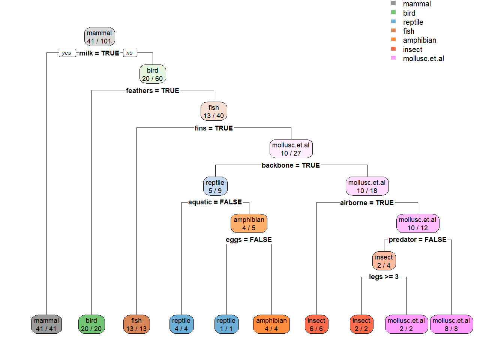
tree_fulln= 101
node), split, n, loss, yval, (yprob)
* denotes terminal node
1) root 101 60 mammal (0.41 0.2 0.05 0.13 0.04 0.079 0.099)
2) milk=TRUE 41 0 mammal (1 0 0 0 0 0 0) *
3) milk=FALSE 60 40 bird (0 0.33 0.083 0.22 0.067 0.13 0.17)
6) feathers=TRUE 20 0 bird (0 1 0 0 0 0 0) *
7) feathers=FALSE 40 27 fish (0 0 0.12 0.32 0.1 0.2 0.25)
14) fins=TRUE 13 0 fish (0 0 0 1 0 0 0) *
15) fins=FALSE 27 17 mollusc.et.al (0 0 0.19 0 0.15 0.3 0.37)
30) backbone=TRUE 9 4 reptile (0 0 0.56 0 0.44 0 0)
60) aquatic=FALSE 4 0 reptile (0 0 1 0 0 0 0) *
61) aquatic=TRUE 5 1 amphibian (0 0 0.2 0 0.8 0 0)
122) eggs=FALSE 1 0 reptile (0 0 1 0 0 0 0) *
123) eggs=TRUE 4 0 amphibian (0 0 0 0 1 0 0) *
31) backbone=FALSE 18 8 mollusc.et.al (0 0 0 0 0 0.44 0.56)
62) airborne=TRUE 6 0 insect (0 0 0 0 0 1 0) *
63) airborne=FALSE 12 2 mollusc.et.al (0 0 0 0 0 0.17 0.83)
126) predator=FALSE 4 2 insect (0 0 0 0 0 0.5 0.5)
252) legs>=3 2 0 insect (0 0 0 0 0 1 0) *
253) legs< 3 2 0 mollusc.et.al (0 0 0 0 0 0 1) *
127) predator=TRUE 8 0 mollusc.et.al (0 0 0 0 0 0 1) *Training error on tree with pre-pruning
predict(tree_default, Zoo) |> head () mammal bird reptile fish amphibian insect mollusc.et.al
aardvark 1 0 0 0 0 0 0
antelope 1 0 0 0 0 0 0
bass 0 0 0 1 0 0 0
bear 1 0 0 0 0 0 0
boar 1 0 0 0 0 0 0
buffalo 1 0 0 0 0 0 0pred <- predict(tree_default, Zoo, type="class")
head(pred)aardvark antelope bass bear boar buffalo
mammal mammal fish mammal mammal mammal
Levels: mammal bird reptile fish amphibian insect mollusc.et.alconfusion_table <- with(Zoo, table(type, pred))
confusion_table pred
type mammal bird reptile fish amphibian insect mollusc.et.al
mammal 41 0 0 0 0 0 0
bird 0 20 0 0 0 0 0
reptile 0 0 5 0 0 0 0
fish 0 0 0 13 0 0 0
amphibian 0 0 4 0 0 0 0
insect 0 0 0 0 0 0 8
mollusc.et.al 0 0 0 0 0 0 10# number of correctly predicted
correct <- confusion_table |> diag() |> sum()
correct[1] 89# number of false predictions
error <- confusion_table |> sum() - correct
error[1] 12# the precent of accuract classified objects
accuracy <- correct / (correct + error)
accuracy[1] 0.8811881Use a function for accuracy
# function that shows accuracy without manually finding and saving pred, error, and accuracy separately
accuracy <- function(truth, prediction) {
tbl <- table(truth, prediction)
sum(diag(tbl))/sum(tbl)
}
accuracy(Zoo |> pull(type), pred)[1] 0.8811881Training error of the full tree
accuracy(Zoo |> pull(type),
predict(tree_full, Zoo, type = "class"))[1] 1Get a confusion table with more statistics (using caret)
library(caret)
confusionMatrix(data = pred,
reference = Zoo |> pull(type))Confusion Matrix and Statistics
Reference
Prediction mammal bird reptile fish amphibian insect mollusc.et.al
mammal 41 0 0 0 0 0 0
bird 0 20 0 0 0 0 0
reptile 0 0 5 0 4 0 0
fish 0 0 0 13 0 0 0
amphibian 0 0 0 0 0 0 0
insect 0 0 0 0 0 0 0
mollusc.et.al 0 0 0 0 0 8 10
Overall Statistics
Accuracy : 0.8812
95% CI : (0.8017, 0.9371)
No Information Rate : 0.4059
P-Value [Acc > NIR] : < 2.2e-16
Kappa : 0.8431
Mcnemar's Test P-Value : NA
Statistics by Class:
Class: mammal Class: bird Class: reptile Class: fish
Sensitivity 1.0000 1.000 1.00000 1.0000
Specificity 1.0000 1.000 0.95833 1.0000
Pos Pred Value 1.0000 1.000 0.55556 1.0000
Neg Pred Value 1.0000 1.000 1.00000 1.0000
Prevalence 0.4059 0.198 0.04950 0.1287
Detection Rate 0.4059 0.198 0.04950 0.1287
Detection Prevalence 0.4059 0.198 0.08911 0.1287
Balanced Accuracy 1.0000 1.000 0.97917 1.0000
Class: amphibian Class: insect Class: mollusc.et.al
Sensitivity 0.0000 0.00000 1.00000
Specificity 1.0000 1.00000 0.91209
Pos Pred Value NaN NaN 0.55556
Neg Pred Value 0.9604 0.92079 1.00000
Prevalence 0.0396 0.07921 0.09901
Detection Rate 0.0000 0.00000 0.09901
Detection Prevalence 0.0000 0.00000 0.17822
Balanced Accuracy 0.5000 0.50000 0.95604A more detailed view of predictions
Make up my own animal: A lion with feathered wings
my_animal <- tibble(hair = TRUE, feathers = TRUE, eggs = FALSE,
milk = TRUE, airborne = TRUE, aquatic = FALSE, predator = TRUE,
toothed = TRUE, backbone = TRUE, breathes = TRUE, venomous = FALSE,
fins = FALSE, legs = 4, tail = TRUE, domestic = FALSE,
catsize = FALSE, type = NA)Fix columns to be factors like in the training set.
my_animal <- my_animal |>
mutate(across(where(is.logical), factor, levels = c(TRUE, FALSE)))
my_animal# A tibble: 1 × 17
hair feathers eggs milk airborne aquatic predator toothed backbone breathes
<fct> <fct> <fct> <fct> <fct> <fct> <fct> <fct> <fct> <fct>
1 TRUE TRUE FALSE TRUE TRUE FALSE TRUE TRUE TRUE TRUE
# ℹ 7 more variables: venomous <fct>, fins <fct>, legs <dbl>, tail <fct>,
# domestic <fct>, catsize <fct>, type <fct>Make a prediction using the default tree
predict(tree_default , my_animal, type = "class") 1
mammal
Levels: mammal bird reptile fish amphibian insect mollusc.et.alThe package caret makes preparing training sets, building classification (and regression) models and evaluation easier. A great cheat sheet can be found here.
library(caret)Cross-validation runs are independent and can be done faster in parallel. To enable multi-core support, caret uses the package foreach and you need to load a do backend. For Linux, you can use doMC with 4 cores. Windows needs different backend like doParallel (see caret cheat sheet above).
# Windows backend
library(doParallel)Loading required package: foreach
Attaching package: 'foreach'The following objects are masked from 'package:purrr':
accumulate, whenLoading required package: iteratorsLoading required package: parallelcl <- makeCluster(4, type="SOCK")
registerDoParallel(cl)
# had to install doParallel and snow to make this workSet random number generator seed to make results reproducible
set.seed(2000)Test data is not used in the model building process and set aside purely for testing the model. Here, we partition data the 80% training and 20% testing.
inTrain <- createDataPartition(y = Zoo$type, p = .8, list = FALSE)
Zoo_train <- Zoo |> slice(inTrain)Warning: Slicing with a 1-column matrix was deprecated in dplyr 1.1.0.Zoo_test <- Zoo |> slice(-inTrain)The package caret combines training and validation for hyperparameter tuning into a single function called train(). It internally splits the data into training and validation sets and thus will provide you with error estimates for different hyperparameter settings. trainControl is used to choose how testing is performed.
For rpart, train tries to tune the cp parameter (tree complexity) using accuracy to chose the best model. I set minsplit to 2 since we have not much data. Note: Parameters used for tuning (in this case cp) need to be set using a data.frame in the argument tuneGrid! Setting it in control will be ignored.
fit <- Zoo_train |>
train(type ~ .,
data = _ ,
method = "rpart",
control = rpart.control(minsplit = 2),
trControl = trainControl(method = "cv", number = 10),
tuneLength = 5)
fitCART
83 samples
16 predictors
7 classes: 'mammal', 'bird', 'reptile', 'fish', 'amphibian', 'insect', 'mollusc.et.al'
No pre-processing
Resampling: Cross-Validated (10 fold)
Summary of sample sizes: 77, 74, 75, 73, 74, 76, ...
Resampling results across tuning parameters:
cp Accuracy Kappa
0.00 0.9384921 0.9188571
0.08 0.8973810 0.8681837
0.16 0.7447619 0.6637060
0.22 0.6663095 0.5540490
0.32 0.4735317 0.1900043
Accuracy was used to select the optimal model using the largest value.
The final value used for the model was cp = 0.Note: Train has built 10 trees using the training folds for each value of cp and the reported values for accuracy and Kappa are the averages on the validation folds.
A model using the best tuning parameters and using all the data supplied to train() is available as fit$finalModel.
rpart.plot(fit$finalModel, extra = 2,
box.palette = list("Gy", "Gn", "Bu", "Bn", "Or", "Rd", "Pu"))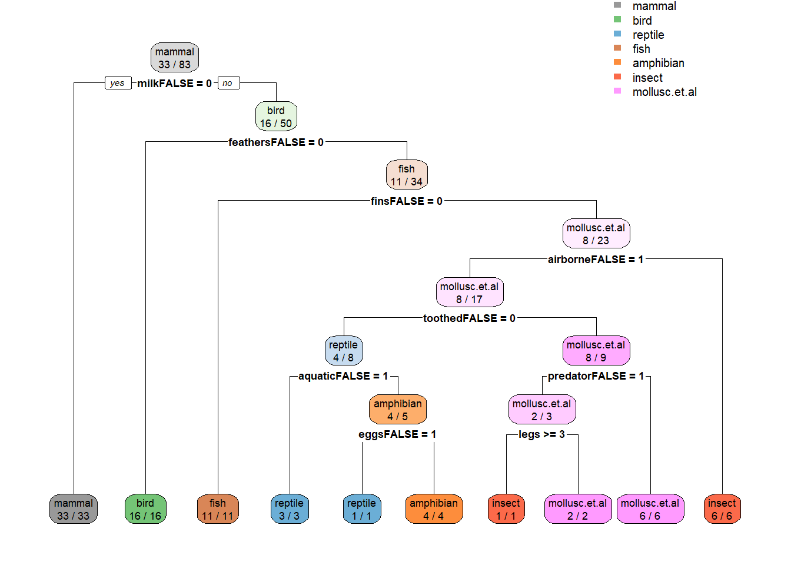
caret also computes variable importance. By default it uses competing splits (splits which would be runners up, but do not get chosen by the tree) for rpart models (see ? varImp). Toothed is the runner up for many splits, but it never gets chosen!
varImp(fit)rpart variable importance
Overall
toothedFALSE 100.000
feathersFALSE 69.814
backboneFALSE 63.084
milkFALSE 55.555
eggsFALSE 53.614
hairFALSE 50.518
finsFALSE 46.984
tailFALSE 28.447
breathesFALSE 28.128
airborneFALSE 26.272
legs 25.859
aquaticFALSE 5.960
predatorFALSE 2.349
venomousFALSE 1.387
catsizeFALSE 0.000
domesticFALSE 0.000Here is the variable importance without competing splits.
imp <- varImp(fit, compete = FALSE)
imprpart variable importance
Overall
milkFALSE 100.000
feathersFALSE 55.694
finsFALSE 39.453
toothedFALSE 22.956
airborneFALSE 22.478
aquaticFALSE 9.987
eggsFALSE 6.658
legs 5.549
predatorFALSE 1.850
domesticFALSE 0.000
breathesFALSE 0.000
catsizeFALSE 0.000
tailFALSE 0.000
hairFALSE 0.000
backboneFALSE 0.000
venomousFALSE 0.000ggplot(imp)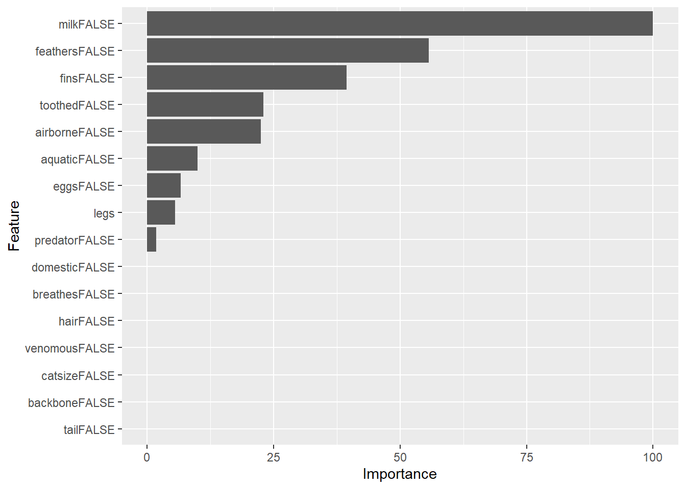
Note: Not all models provide a variable importance function. In this case caret might calculate the variable importance by itself and ignore the model (see ? varImp)!
Use the best model on the test data
pred <- predict(fit, newdata = Zoo_test)
pred [1] mammal mammal mollusc.et.al insect mammal
[6] mammal mammal bird mammal mammal
[11] bird fish fish mammal mollusc.et.al
[16] bird insect bird
Levels: mammal bird reptile fish amphibian insect mollusc.et.alCaret’s confusionMatrix() function calculates accuracy, confidence intervals, kappa and many more evaluation metrics. You need to use separate test data to create a confusion matrix based on the generalization error.
confusionMatrix(data = pred,
ref = Zoo_test |> pull(type))Confusion Matrix and Statistics
Reference
Prediction mammal bird reptile fish amphibian insect mollusc.et.al
mammal 8 0 0 0 0 0 0
bird 0 4 0 0 0 0 0
reptile 0 0 0 0 0 0 0
fish 0 0 0 2 0 0 0
amphibian 0 0 0 0 0 0 0
insect 0 0 1 0 0 1 0
mollusc.et.al 0 0 0 0 0 0 2
Overall Statistics
Accuracy : 0.9444
95% CI : (0.7271, 0.9986)
No Information Rate : 0.4444
P-Value [Acc > NIR] : 1.076e-05
Kappa : 0.9231
Mcnemar's Test P-Value : NA
Statistics by Class:
Class: mammal Class: bird Class: reptile Class: fish
Sensitivity 1.0000 1.0000 0.00000 1.0000
Specificity 1.0000 1.0000 1.00000 1.0000
Pos Pred Value 1.0000 1.0000 NaN 1.0000
Neg Pred Value 1.0000 1.0000 0.94444 1.0000
Prevalence 0.4444 0.2222 0.05556 0.1111
Detection Rate 0.4444 0.2222 0.00000 0.1111
Detection Prevalence 0.4444 0.2222 0.00000 0.1111
Balanced Accuracy 1.0000 1.0000 0.50000 1.0000
Class: amphibian Class: insect Class: mollusc.et.al
Sensitivity NA 1.00000 1.0000
Specificity 1 0.94118 1.0000
Pos Pred Value NA 0.50000 1.0000
Neg Pred Value NA 1.00000 1.0000
Prevalence 0 0.05556 0.1111
Detection Rate 0 0.05556 0.1111
Detection Prevalence 0 0.11111 0.1111
Balanced Accuracy NA 0.97059 1.0000Some notes
Many classification algorithms and train in caret do not deal well with missing values. If your classification model can deal with missing values (e.g., rpart) then use na.action = na.pass when you call train and predict. Otherwise, you need to remove observations with missing values with na.omit or use imputation to replace the missing values before you train the model. Make sure that you still have enough observations left.
Make sure that nominal variables (this includes logical variables) are coded as factors.
The class variable for train in caret cannot have level names that are keywords in R (e.g., TRUE and FALSE). Rename them to, for example, “yes” and “no.”
Make sure that nominal variables (factors) have examples for all possible values. Some methods might have problems with variable values without examples. You can drop empty levels using droplevels or factor.
Sampling in train might create a sample that does not contain examples for all values in a nominal (factor) variable. You will get an error message. This most likely happens for variables which have one very rare value. You may have to remove the variable.
We will compare decision trees with a k-nearest neighbors (kNN) classifier. We will create fixed sampling scheme (10-folds) so we compare the different models using exactly the same folds. It is specified as trControl during training.
train_index <- createFolds(Zoo_train$type, k = 10)Build models
rpartFit <- Zoo_train |>
train(type ~ .,
data = _,
method = "rpart",
tuneLength = 10,
trControl = trainControl(method = "cv", indexOut = train_index)
)Note: for kNN we ask train to scale the data using preProcess = "scale". Logicals will be used as 0-1 variables in Euclidean distance calculation.
knnFit <- Zoo_train |>
train(type ~ .,
data = _,
method = "knn",
preProcess = "scale",
tuneLength = 10,
trControl = trainControl(method = "cv", indexOut = train_index)
)Compare accuracy over all folds.
resamps <- resamples(list(
CART = rpartFit,
kNearestNeighbors = knnFit
))
summary(resamps)
Call:
summary.resamples(object = resamps)
Models: CART, kNearestNeighbors
Number of resamples: 10
Accuracy
Min. 1st Qu. Median Mean 3rd Qu. Max. NA's
CART 0.6666667 0.8750000 0.8888889 0.8722222 0.8888889 1 0
kNearestNeighbors 0.8750000 0.9166667 1.0000000 0.9652778 1.0000000 1 0
Kappa
Min. 1st Qu. Median Mean 3rd Qu. Max. NA's
CART 0.5909091 0.8333333 0.8474576 0.8341866 0.8570312 1 0
kNearestNeighbors 0.8333333 0.8977273 1.0000000 0.9546970 1.0000000 1 0caret provides some visualizations using the package lattice. For example, a boxplot to compare the accuracy and kappa distribution (over the 10 folds).
library(lattice)
bwplot(resamps, layout = c(3, 1))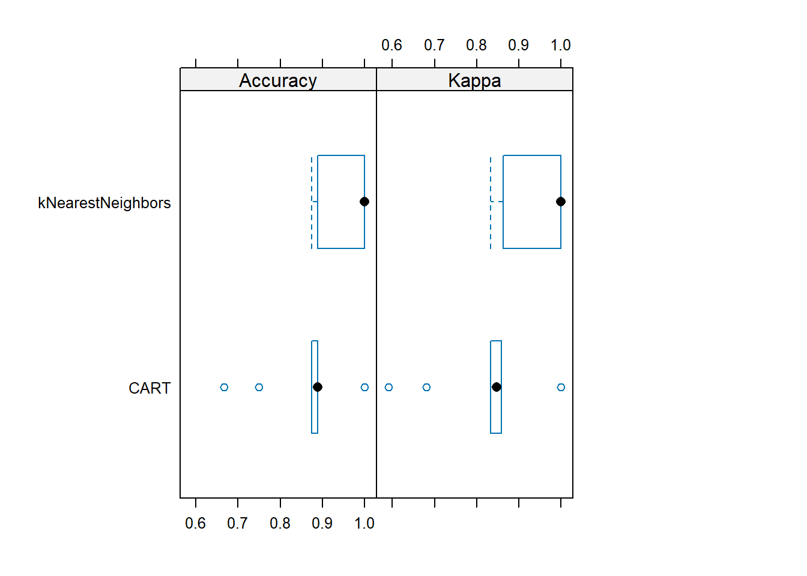
We see that kNN is performing consistently better on the folds than CART (except for some outlier folds).
Find out if one models is statistically better than the other (is the difference in accuracy is not zero).
difs <- diff(resamps)
difs
Call:
diff.resamples(x = resamps)
Models: CART, kNearestNeighbors
Metrics: Accuracy, Kappa
Number of differences: 1
p-value adjustment: bonferroni summary(difs)
Call:
summary.diff.resamples(object = difs)
p-value adjustment: bonferroni
Upper diagonal: estimates of the difference
Lower diagonal: p-value for H0: difference = 0
Accuracy
CART kNearestNeighbors
CART -0.09306
kNearestNeighbors 0.01151
Kappa
CART kNearestNeighbors
CART -0.1205
kNearestNeighbors 0.0104 p-values tells you the probability of seeing an even more extreme value (difference between accuracy) given that the null hypothesis (difference = 0) is true. For a better classifier, the p-value should be less than .05 or 0.01. diff automatically applies Bonferroni correction for multiple comparisons. In this case, kNN seems better but the classifiers do not perform statistically differently.
Decision trees implicitly select features for splitting, but we can also select features manually.
library(FSelector)These scores measure how related each feature is to the class variable. For discrete features (as in our case), the chi-square statistic can be used to derive a score.
weights <- Zoo_train |>
chi.squared(type ~ ., data = _) |>
as_tibble(rownames = "feature") |>
arrange(desc(attr_importance))
weights# A tibble: 16 × 2
feature attr_importance
<chr> <dbl>
1 feathers 1
2 milk 1
3 backbone 1
4 toothed 0.975
5 eggs 0.933
6 hair 0.907
7 breathes 0.898
8 airborne 0.848
9 fins 0.845
10 legs 0.828
11 tail 0.779
12 catsize 0.664
13 aquatic 0.655
14 venomous 0.475
15 predator 0.385
16 domestic 0.231plot importance in descending order (using reorder to order factor levels used by ggplot).
ggplot(weights,
aes(x = attr_importance, y = reorder(feature, attr_importance))) +
geom_bar(stat = "identity") +
xlab("Importance score") +
ylab("Feature")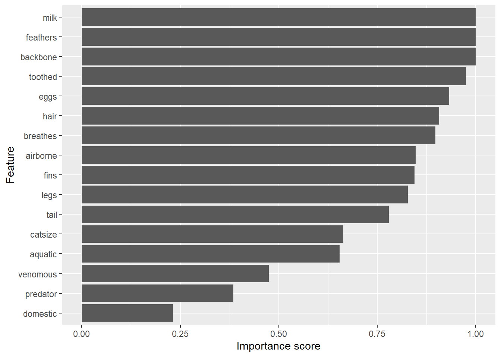
Get the 5 best features
subset <- cutoff.k(weights |>
column_to_rownames("feature"), 5)
subset[1] "feathers" "milk" "backbone" "toothed" "eggs" Use only the best 5 features to build a model (Fselector provides as.simple.formula)
f <- as.simple.formula(subset, "type")
ftype ~ feathers + milk + backbone + toothed + eggs
<environment: 0x000001f161a58000>m <- Zoo_train |> rpart(f, data = _)
rpart.plot(m, extra = 2, roundint = FALSE)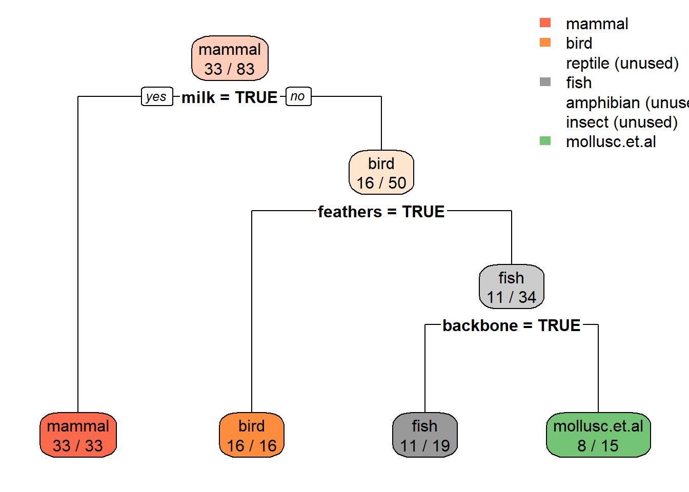
There are many alternative ways to calculate univariate importance scores (see package FSelector). Some of them (also) work for continuous features. One example is the information gain ratio based on entropy as used in decision tree induction.
Zoo_train |>
gain.ratio(type ~ ., data = _) |>
as_tibble(rownames = "feature") |>
arrange(desc(attr_importance))# A tibble: 16 × 2
feature attr_importance
<chr> <dbl>
1 milk 1
2 backbone 1
3 feathers 1
4 toothed 0.919
5 eggs 0.827
6 breathes 0.821
7 hair 0.782
8 fins 0.689
9 legs 0.682
10 airborne 0.671
11 tail 0.573
12 aquatic 0.391
13 catsize 0.383
14 venomous 0.351
15 predator 0.125
16 domestic 0.0975Often features are related and calculating importance for each feature independently is not optimal. We can use greedy search heuristics. For example cfs uses correlation/entropy with best first search.
Zoo_train |>
cfs(type ~ ., data = _) [1] "hair" "feathers" "eggs" "milk" "toothed" "backbone"
[7] "breathes" "fins" "legs" "tail" Black-box feature selection uses an evaluator function (the black box) to calculate a score to be maximized. First, we define an evaluation function that builds a model given a subset of features and calculates a quality score. We use here the average for 5 bootstrap samples (method = "cv" can also be used instead), no tuning (to be faster), and the average accuracy as the score.
evaluator <- function(subset) {
model <- Zoo_train |>
train(as.simple.formula(subset, "type"),
data = _,
method = "rpart",
trControl = trainControl(method = "boot", number = 5),
tuneLength = 0)
results <- model$resample$Accuracy
cat("Trying features:", paste(subset, collapse = " + "), "\n")
m <- mean(results)
cat("Accuracy:", round(m, 2), "\n\n")
m
}Start with all features (but not the class variable type)
features <- Zoo_train |> colnames() |> setdiff("type")There are several (greedy) search strategies available. These run for a while!
subset <- backward.search(features, evaluator)Trying features: hair + feathers + eggs + milk + airborne + aquatic + predator + toothed + backbone + breathes + venomous + fins + legs + tail + domestic + catsize
Accuracy: 0.55
Trying features: feathers + eggs + milk + airborne + aquatic + predator + toothed + backbone + breathes + venomous + fins + legs + tail + domestic + catsize
Accuracy: 0.49
Trying features: hair + eggs + milk + airborne + aquatic + predator + toothed + backbone + breathes + venomous + fins + legs + tail + domestic + catsize
Accuracy: 0.45
Trying features: hair + feathers + milk + airborne + aquatic + predator + toothed + backbone + breathes + venomous + fins + legs + tail + domestic + catsize
Accuracy: 0.39
Trying features: hair + feathers + eggs + airborne + aquatic + predator + toothed + backbone + breathes + venomous + fins + legs + tail + domestic + catsize
Accuracy: 0.47
Trying features: hair + feathers + eggs + milk + aquatic + predator + toothed + backbone + breathes + venomous + fins + legs + tail + domestic + catsize
Accuracy: 0.52
Trying features: hair + feathers + eggs + milk + airborne + predator + toothed + backbone + breathes + venomous + fins + legs + tail + domestic + catsize
Accuracy: 0.48
Trying features: hair + feathers + eggs + milk + airborne + aquatic + toothed + backbone + breathes + venomous + fins + legs + tail + domestic + catsize
Accuracy: 0.48
Trying features: hair + feathers + eggs + milk + airborne + aquatic + predator + backbone + breathes + venomous + fins + legs + tail + domestic + catsize
Accuracy: 0.47
Trying features: hair + feathers + eggs + milk + airborne + aquatic + predator + toothed + breathes + venomous + fins + legs + tail + domestic + catsize
Accuracy: 0.5
Trying features: hair + feathers + eggs + milk + airborne + aquatic + predator + toothed + backbone + venomous + fins + legs + tail + domestic + catsize
Accuracy: 0.47
Trying features: hair + feathers + eggs + milk + airborne + aquatic + predator + toothed + backbone + breathes + fins + legs + tail + domestic + catsize
Accuracy: 0.48
Trying features: hair + feathers + eggs + milk + airborne + aquatic + predator + toothed + backbone + breathes + venomous + legs + tail + domestic + catsize
Accuracy: 0.46
Trying features: hair + feathers + eggs + milk + airborne + aquatic + predator + toothed + backbone + breathes + venomous + fins + tail + domestic + catsize
Accuracy: 0.44
Trying features: hair + feathers + eggs + milk + airborne + aquatic + predator + toothed + backbone + breathes + venomous + fins + legs + domestic + catsize
Accuracy: 0.47
Trying features: hair + feathers + eggs + milk + airborne + aquatic + predator + toothed + backbone + breathes + venomous + fins + legs + tail + catsize
Accuracy: 0.5
Trying features: hair + feathers + eggs + milk + airborne + aquatic + predator + toothed + backbone + breathes + venomous + fins + legs + tail + domestic
Accuracy: 0.45 subset [1] "hair" "feathers" "eggs" "milk" "airborne" "aquatic"
[7] "predator" "toothed" "backbone" "breathes" "venomous" "fins"
[13] "legs" "tail" "domestic" "catsize" All accuracy less that 55%, these seem low.
subset <- forward.search(features, evaluator)Trying features: hair
Accuracy: 0.49
Trying features: feathers
Accuracy: 0.46
Trying features: eggs
Accuracy: 0.44
Trying features: milk
Accuracy: 0.52
Trying features: airborne
Accuracy: 0.45
Trying features: aquatic
Accuracy: 0.42
Trying features: predator
Accuracy: 0.33
Trying features: toothed
Accuracy: 0.41
Trying features: backbone
Accuracy: 0.39
Trying features: breathes
Accuracy: 0.44
Trying features: venomous
Accuracy: 0.35
Trying features: fins
Accuracy: 0.43
Trying features: legs
Accuracy: 0.47
Trying features: tail
Accuracy: 0.36
Trying features: domestic
Accuracy: 0.37
Trying features: catsize
Accuracy: 0.39
Trying features: hair + milk
Accuracy: 0.4
Trying features: feathers + milk
Accuracy: 0.5
Trying features: eggs + milk
Accuracy: 0.41
Trying features: milk + airborne
Accuracy: 0.46
Trying features: milk + aquatic
Accuracy: 0.49
Trying features: milk + predator
Accuracy: 0.42
Trying features: milk + toothed
Accuracy: 0.55
Trying features: milk + backbone
Accuracy: 0.45
Trying features: milk + breathes
Accuracy: 0.51
Trying features: milk + venomous
Accuracy: 0.52
Trying features: milk + fins
Accuracy: 0.51
Trying features: milk + legs
Accuracy: 0.47
Trying features: milk + tail
Accuracy: 0.5
Trying features: milk + domestic
Accuracy: 0.49
Trying features: milk + catsize
Accuracy: 0.44
Trying features: hair + milk + toothed
Accuracy: 0.45
Trying features: feathers + milk + toothed
Accuracy: 0.52
Trying features: eggs + milk + toothed
Accuracy: 0.47
Trying features: milk + airborne + toothed
Accuracy: 0.44
Trying features: milk + aquatic + toothed
Accuracy: 0.45
Trying features: milk + predator + toothed
Accuracy: 0.5
Trying features: milk + toothed + backbone
Accuracy: 0.43
Trying features: milk + toothed + breathes
Accuracy: 0.52
Trying features: milk + toothed + venomous
Accuracy: 0.47
Trying features: milk + toothed + fins
Accuracy: 0.52
Trying features: milk + toothed + legs
Accuracy: 0.5
Trying features: milk + toothed + tail
Accuracy: 0.46
Trying features: milk + toothed + domestic
Accuracy: 0.52
Trying features: milk + toothed + catsize
Accuracy: 0.38 subset[1] "milk" "toothed"These accuracy seem low as well with most being below 50%
subset <- best.first.search(features, evaluator)Trying features: hair
Accuracy: 0.42
Trying features: feathers
Accuracy: 0.5
Trying features: eggs
Accuracy: 0.5
Trying features: milk
Accuracy: 0.5
Trying features: airborne
Accuracy: 0.45
Trying features: aquatic
Accuracy: 0.41
Trying features: predator
Accuracy: 0.39
Trying features: toothed
Accuracy: 0.47
Trying features: backbone
Accuracy: 0.44
Trying features: breathes
Accuracy: 0.49
Trying features: venomous
Accuracy: 0.41
Trying features: fins
Accuracy: 0.43
Trying features: legs
Accuracy: 0.49
Trying features: tail
Accuracy: 0.39
Trying features: domestic
Accuracy: 0.45
Trying features: catsize
Accuracy: 0.34
Trying features: hair + milk
Accuracy: 0.51
Trying features: feathers + milk
Accuracy: 0.53
Trying features: eggs + milk
Accuracy: 0.52
Trying features: milk + airborne
Accuracy: 0.41
Trying features: milk + aquatic
Accuracy: 0.49
Trying features: milk + predator
Accuracy: 0.42
Trying features: milk + toothed
Accuracy: 0.52
Trying features: milk + backbone
Accuracy: 0.49
Trying features: milk + breathes
Accuracy: 0.41
Trying features: milk + venomous
Accuracy: 0.42
Trying features: milk + fins
Accuracy: 0.5
Trying features: milk + legs
Accuracy: 0.57
Trying features: milk + tail
Accuracy: 0.49
Trying features: milk + domestic
Accuracy: 0.48
Trying features: milk + catsize
Accuracy: 0.57
Trying features: hair + milk + legs
Accuracy: 0.45
Trying features: feathers + milk + legs
Accuracy: 0.46
Trying features: eggs + milk + legs
Accuracy: 0.46
Trying features: milk + airborne + legs
Accuracy: 0.43
Trying features: milk + aquatic + legs
Accuracy: 0.48
Trying features: milk + predator + legs
Accuracy: 0.49
Trying features: milk + toothed + legs
Accuracy: 0.44
Trying features: milk + backbone + legs
Accuracy: 0.5
Trying features: milk + breathes + legs
Accuracy: 0.51
Trying features: milk + venomous + legs
Accuracy: 0.47
Trying features: milk + fins + legs
Accuracy: 0.46
Trying features: milk + legs + tail
Accuracy: 0.47
Trying features: milk + legs + domestic
Accuracy: 0.37
Trying features: milk + legs + catsize
Accuracy: 0.42 subset[1] "milk" "legs"This produced the highest accuracy scores yet.
subset <- hill.climbing.search(features, evaluator)Trying features: hair + airborne + predator + toothed + venomous + fins + catsize
Accuracy: 0.48
Trying features: hair + feathers + airborne + predator + toothed + venomous + fins + catsize
Accuracy: 0.41
Trying features: hair + eggs + airborne + predator + toothed + venomous + fins + catsize
Accuracy: 0.43
Trying features: hair + milk + airborne + predator + toothed + venomous + fins + catsize
Accuracy: 0.39
Trying features: hair + airborne + aquatic + predator + toothed + venomous + fins + catsize
Accuracy: 0.5
Trying features: hair + airborne + predator + toothed + backbone + venomous + fins + catsize
Accuracy: 0.47
Trying features: hair + airborne + predator + toothed + breathes + venomous + fins + catsize
Accuracy: 0.49
Trying features: hair + airborne + predator + toothed + venomous + fins + legs + catsize
Accuracy: 0.46
Trying features: hair + airborne + predator + toothed + venomous + fins + tail + catsize
Accuracy: 0.37
Trying features: hair + airborne + predator + toothed + venomous + fins + domestic + catsize
Accuracy: 0.48
Trying features: airborne + predator + toothed + venomous + fins + catsize
Accuracy: 0.46
Trying features: hair + predator + toothed + venomous + fins + catsize
Accuracy: 0.45
Trying features: hair + airborne + toothed + venomous + fins + catsize
Accuracy: 0.44
Trying features: hair + airborne + predator + venomous + fins + catsize
Accuracy: 0.51
Trying features: hair + airborne + predator + toothed + fins + catsize
Accuracy: 0.52
Trying features: hair + airborne + predator + toothed + venomous + catsize
Accuracy: 0.45
Trying features: hair + airborne + predator + toothed + venomous + fins
Accuracy: 0.48
Trying features: hair + feathers + airborne + predator + toothed + fins + catsize
Accuracy: 0.43
Trying features: hair + eggs + airborne + predator + toothed + fins + catsize
Accuracy: 0.49
Trying features: hair + milk + airborne + predator + toothed + fins + catsize
Accuracy: 0.42
Trying features: hair + airborne + aquatic + predator + toothed + fins + catsize
Accuracy: 0.42
Trying features: hair + airborne + predator + toothed + backbone + fins + catsize
Accuracy: 0.56
Trying features: hair + airborne + predator + toothed + breathes + fins + catsize
Accuracy: 0.56
Trying features: hair + airborne + predator + toothed + fins + legs + catsize
Accuracy: 0.58
Trying features: hair + airborne + predator + toothed + fins + tail + catsize
Accuracy: 0.47
Trying features: hair + airborne + predator + toothed + fins + domestic + catsize
Accuracy: 0.51
Trying features: airborne + predator + toothed + fins + catsize
Accuracy: 0.48
Trying features: hair + predator + toothed + fins + catsize
Accuracy: 0.44
Trying features: hair + airborne + toothed + fins + catsize
Accuracy: 0.49
Trying features: hair + airborne + predator + fins + catsize
Accuracy: 0.46
Trying features: hair + airborne + predator + toothed + catsize
Accuracy: 0.46
Trying features: hair + airborne + predator + toothed + fins
Accuracy: 0.49
Trying features: hair + feathers + airborne + predator + toothed + fins + legs + catsize
Accuracy: 0.52
Trying features: hair + eggs + airborne + predator + toothed + fins + legs + catsize
Accuracy: 0.43
Trying features: hair + milk + airborne + predator + toothed + fins + legs + catsize
Accuracy: 0.43
Trying features: hair + airborne + aquatic + predator + toothed + fins + legs + catsize
Accuracy: 0.42
Trying features: hair + airborne + predator + toothed + backbone + fins + legs + catsize
Accuracy: 0.45
Trying features: hair + airborne + predator + toothed + breathes + fins + legs + catsize
Accuracy: 0.47
Trying features: hair + airborne + predator + toothed + fins + legs + tail + catsize
Accuracy: 0.48
Trying features: hair + airborne + predator + toothed + fins + legs + domestic + catsize
Accuracy: 0.4
Trying features: airborne + predator + toothed + fins + legs + catsize
Accuracy: 0.47
Trying features: hair + predator + toothed + fins + legs + catsize
Accuracy: 0.49
Trying features: hair + airborne + toothed + fins + legs + catsize
Accuracy: 0.4
Trying features: hair + airborne + predator + fins + legs + catsize
Accuracy: 0.38
Trying features: hair + airborne + predator + toothed + legs + catsize
Accuracy: 0.44
Trying features: hair + airborne + predator + toothed + fins + legs
Accuracy: 0.44 subset[1] "hair" "airborne" "predator" "toothed" "fins" "legs" "catsize" This subset appears closer tot he features used in the decision trees above
Nominal features (factors) are often encoded as a series of 0-1 dummy variables. For example, let us try to predict if an animal is a predator given the type. First we use the original encoding of type as a factor with several values.
tree_predator <- Zoo_train |>
rpart(predator ~ type, data = _)
rpart.plot(tree_predator, extra = 2, roundint = FALSE)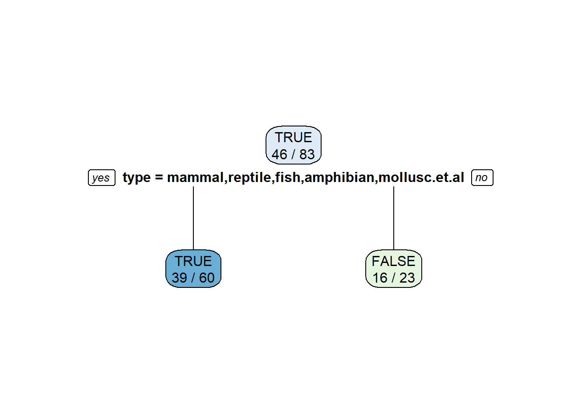
Note: Some splits use multiple values. Building the tree will become extremely slow if a factor has many levels (different values) since the tree has to check all possible splits into two subsets. This situation should be avoided.
Convert type into a set of 0-1 dummy variables using class2ind. See also ? dummyVars in package caret.
Zoo_train_dummy <- as_tibble(class2ind(Zoo_train$type)) |>
mutate(across(everything(), as.factor)) |>
add_column(predator = Zoo_train$predator)
Zoo_train_dummy# A tibble: 83 × 8
mammal bird reptile fish amphibian insect mollusc.et.al predator
<fct> <fct> <fct> <fct> <fct> <fct> <fct> <fct>
1 1 0 0 0 0 0 0 TRUE
2 1 0 0 0 0 0 0 FALSE
3 0 0 0 1 0 0 0 TRUE
4 1 0 0 0 0 0 0 TRUE
5 1 0 0 0 0 0 0 FALSE
6 1 0 0 0 0 0 0 FALSE
7 0 0 0 1 0 0 0 FALSE
8 0 0 0 1 0 0 0 TRUE
9 1 0 0 0 0 0 0 FALSE
10 0 1 0 0 0 0 0 FALSE
# ℹ 73 more rowstree_predator <- Zoo_train_dummy |>
rpart(predator ~ .,
data = _,
control = rpart.control(minsplit = 2, cp = 0.01))
rpart.plot(tree_predator, roundint = FALSE)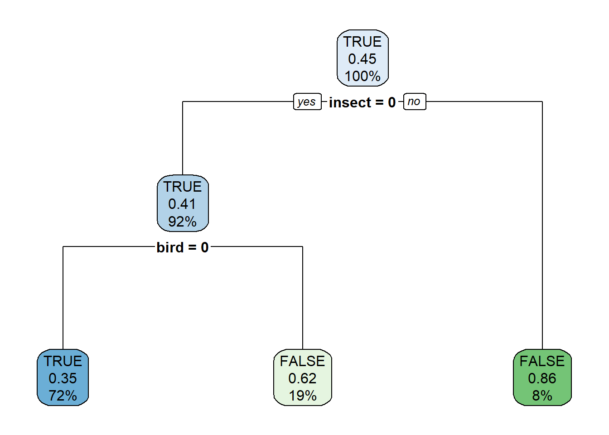
Using caret on the original factor encoding automatically translates factors (here type) into 0-1 dummy variables (e.g., typeinsect = 0). The reason is that some models cannot directly use factors and caret tries to consistently work with all of them.
fit <- Zoo_train |>
train(predator ~ type,
data = _,
method = "rpart",
control = rpart.control(minsplit = 2),
tuneGrid = data.frame(cp = 0.01))
fitCART
83 samples
1 predictor
2 classes: 'TRUE', 'FALSE'
No pre-processing
Resampling: Bootstrapped (25 reps)
Summary of sample sizes: 83, 83, 83, 83, 83, 83, ...
Resampling results:
Accuracy Kappa
0.5474686 0.08647121
Tuning parameter 'cp' was held constant at a value of 0.01rpart.plot(fit$finalModel, extra = 2)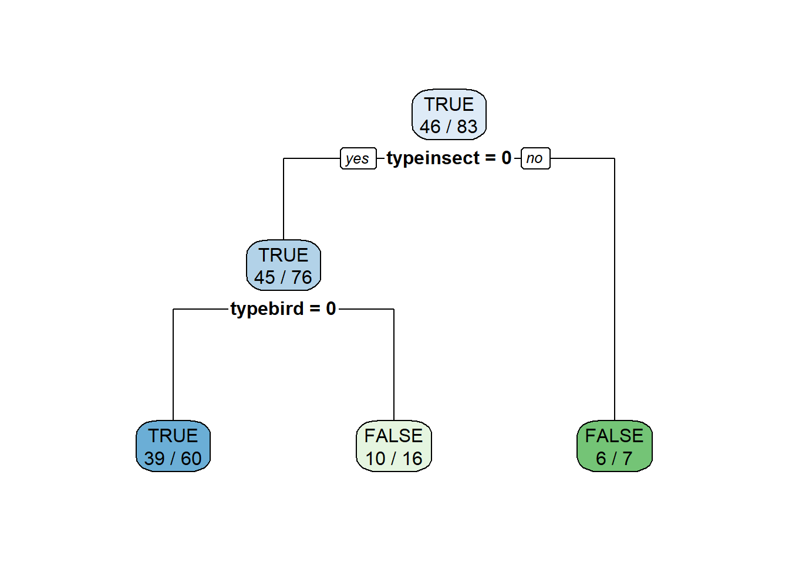
Note: To use a fixed value for the tuning parameter cp, we have to create a tuning grid that only contains that value.
Classifiers have a hard time to learn from data where we have much more observations for one class (called the majority class). This is called the class imbalance problem.
Here is a very good article about the problem and solutions.
library(rpart)
library(rpart.plot)
data(Zoo, package="mlbench")Class distribution
ggplot(Zoo, aes(y = type)) + geom_bar()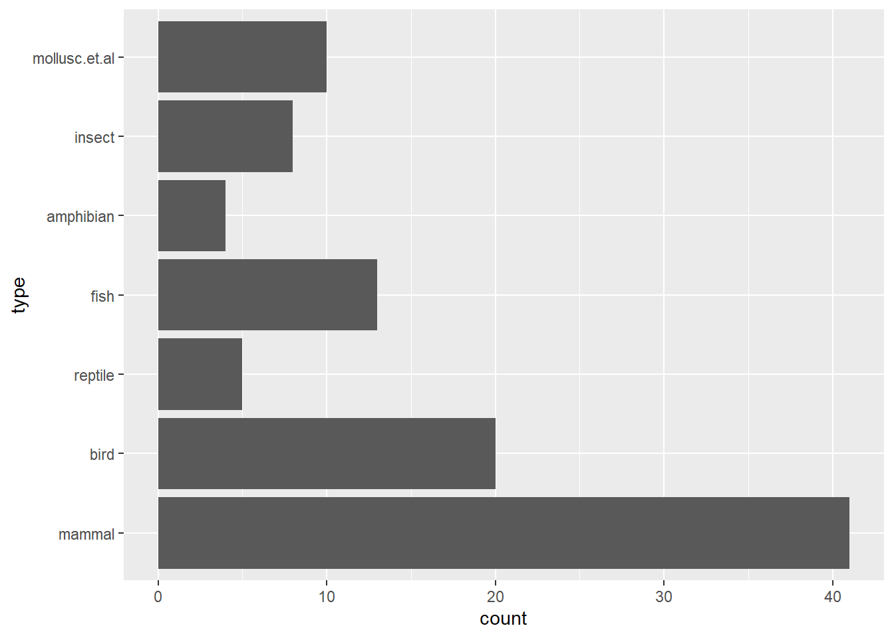
To create an imbalanced problem, we want to decide if an animal is an reptile. First, we change the class variable to make it into a binary reptile/no reptile classification problem. Note: We use here the training data for testing. You should use a separate testing data set!
Zoo_reptile <- Zoo |>
mutate(type = factor(Zoo$type == "reptile",
levels = c(FALSE, TRUE),
labels = c("nonreptile", "reptile")))Do not forget to make the class variable a factor (a nominal variable) or you will get a regression tree instead of a classification tree.
summary(Zoo_reptile) hair feathers eggs milk
Mode :logical Mode :logical Mode :logical Mode :logical
FALSE:58 FALSE:81 FALSE:42 FALSE:60
TRUE :43 TRUE :20 TRUE :59 TRUE :41
airborne aquatic predator toothed
Mode :logical Mode :logical Mode :logical Mode :logical
FALSE:77 FALSE:65 FALSE:45 FALSE:40
TRUE :24 TRUE :36 TRUE :56 TRUE :61
backbone breathes venomous fins
Mode :logical Mode :logical Mode :logical Mode :logical
FALSE:18 FALSE:21 FALSE:93 FALSE:84
TRUE :83 TRUE :80 TRUE :8 TRUE :17
legs tail domestic catsize
Min. :0.000 Mode :logical Mode :logical Mode :logical
1st Qu.:2.000 FALSE:26 FALSE:88 FALSE:57
Median :4.000 TRUE :75 TRUE :13 TRUE :44
Mean :2.842
3rd Qu.:4.000
Max. :8.000
type
nonreptile:96
reptile : 5
See if we have a class imbalance problem.
ggplot(Zoo_reptile, aes(y = type)) + geom_bar()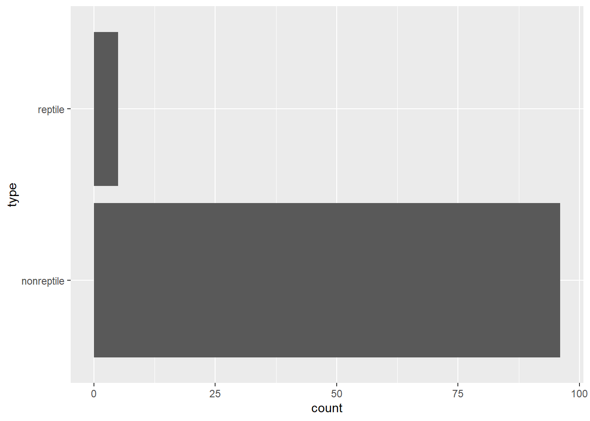
Create test and training data. I use here a 50/50 split to make sure that the test set has some samples of the rare reptile class.
set.seed(1234)
inTrain <- createDataPartition(y = Zoo_reptile$type, p = .5, list = FALSE)
training_reptile <- Zoo_reptile |> slice(inTrain)
testing_reptile <- Zoo_reptile |> slice(-inTrain)the new class variable is clearly not balanced. This is a problem for building a tree!
fit <- training_reptile |>
train(type ~ .,
data = _,
method = "rpart",
trControl = trainControl(method = "cv"))Warning in nominalTrainWorkflow(x = x, y = y, wts = weights, info = trainInfo,
: There were missing values in resampled performance measures.Warnings: "There were missing values in resampled performance measures." means that some test folds did not contain examples of both classes. This is very likely with class imbalance and small datasets.
fitCART
51 samples
16 predictors
2 classes: 'nonreptile', 'reptile'
No pre-processing
Resampling: Cross-Validated (10 fold)
Summary of sample sizes: 46, 47, 46, 46, 45, 46, ...
Resampling results:
Accuracy Kappa
0.9466667 0
Tuning parameter 'cp' was held constant at a value of 0rpart.plot(fit$finalModel, extra = 2)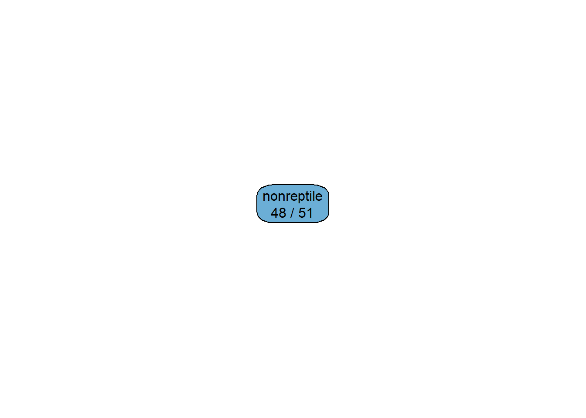
the tree predicts everything as non-reptile. Have a look at the error on the test set.
confusionMatrix(data = predict(fit, testing_reptile),
ref = testing_reptile$type, positive = "reptile")Confusion Matrix and Statistics
Reference
Prediction nonreptile reptile
nonreptile 48 2
reptile 0 0
Accuracy : 0.96
95% CI : (0.8629, 0.9951)
No Information Rate : 0.96
P-Value [Acc > NIR] : 0.6767
Kappa : 0
Mcnemar's Test P-Value : 0.4795
Sensitivity : 0.00
Specificity : 1.00
Pos Pred Value : NaN
Neg Pred Value : 0.96
Prevalence : 0.04
Detection Rate : 0.00
Detection Prevalence : 0.00
Balanced Accuracy : 0.50
'Positive' Class : reptile
Accuracy is high, but it is exactly the same as the no-information rate and kappa is zero. Sensitivity is also zero, meaning that we do not identify any positive (reptile). If the cost of missing a positive is much larger than the cost associated with misclassifying a negative, then accuracy is not a good measure! By dealing with imbalance, we are not concerned with accuracy, but we want to increase the sensitivity, i.e., the chance to identify positive examples.
Note: The positive class value (the one that you want to detect) is set manually to reptile using positive = "reptile". Otherwise sensitivity/specificity will not be correctly calculated.
We use stratified sampling with replacement (to oversample the minority/positive class). You could also use SMOTE (in package DMwR) or other sampling strategies (e.g., from package unbalanced). We use 50+50 observations here (Note: many samples will be chosen several times).
library(sampling)
set.seed(1000) # for repeatability
id <- strata(training_reptile, stratanames = "type", size = c(50, 50), method = "srswr")
training_reptile_balanced <- training_reptile |>
slice(id$ID_unit)
table(training_reptile_balanced$type)
nonreptile reptile
50 50 fit <- training_reptile_balanced |>
train(type ~ .,
data = _,
method = "rpart",
trControl = trainControl(method = "cv"),
control = rpart.control(minsplit = 5))
fitCART
100 samples
16 predictor
2 classes: 'nonreptile', 'reptile'
No pre-processing
Resampling: Cross-Validated (10 fold)
Summary of sample sizes: 90, 90, 90, 90, 90, 90, ...
Resampling results across tuning parameters:
cp Accuracy Kappa
0.18 0.81 0.62
0.30 0.63 0.26
0.34 0.53 0.06
Accuracy was used to select the optimal model using the largest value.
The final value used for the model was cp = 0.18.My random sampling even though I set the seed the same as the example is different.
rpart.plot(fit$finalModel, extra = 2)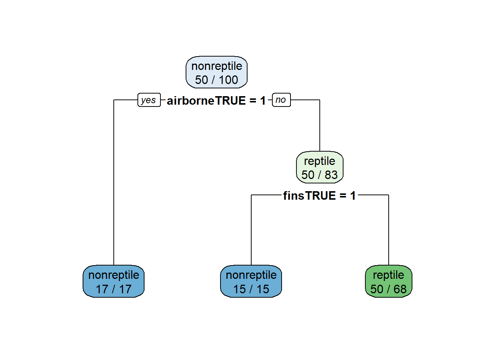
My model accurately identified 2 more additional non reptile than the example in the training data.
Check on the unbalanced testing data.
confusionMatrix(data = predict(fit, testing_reptile),
ref = testing_reptile$type, positive = "reptile")Confusion Matrix and Statistics
Reference
Prediction nonreptile reptile
nonreptile 19 0
reptile 29 2
Accuracy : 0.42
95% CI : (0.2819, 0.5679)
No Information Rate : 0.96
P-Value [Acc > NIR] : 1
Kappa : 0.0498
Mcnemar's Test P-Value : 1.999e-07
Sensitivity : 1.00000
Specificity : 0.39583
Pos Pred Value : 0.06452
Neg Pred Value : 1.00000
Prevalence : 0.04000
Detection Rate : 0.04000
Detection Prevalence : 0.62000
Balanced Accuracy : 0.69792
'Positive' Class : reptile
My testing data appears to have more reptile than the example. Therefore my accuracy in considerably lower and my positive prediction value is only 6.4% rather the 11.7% in the example. My kappa is also lower that the example but my sensitivity is the same.
Note that the accuracy is below the no information rate! However, kappa (improvement of accuracy over randomness) and sensitivity (the ability to identify reptiles) have increased.
There is a tradeoff between sensitivity and specificity (how many of the identified animals are really reptiles) The tradeoff can be controlled using the sample proportions. We can sample more reptiles to increase sensitivity at the cost of lower specificity (this effect cannot be seen in the data since the test set has only a few reptiles).
id <- strata(training_reptile, stratanames = "type", size = c(50, 100), method = "srswr")
training_reptile_balanced <- training_reptile |>
slice(id$ID_unit)
table(training_reptile_balanced$type)
nonreptile reptile
50 100 fit <- training_reptile_balanced |>
train(type ~ .,
data = _,
method = "rpart",
trControl = trainControl(method = "cv"),
control = rpart.control(minsplit = 5))
confusionMatrix(data = predict(fit, testing_reptile),
ref = testing_reptile$type, positive = "reptile")Confusion Matrix and Statistics
Reference
Prediction nonreptile reptile
nonreptile 33 0
reptile 15 2
Accuracy : 0.7
95% CI : (0.5539, 0.8214)
No Information Rate : 0.96
P-Value [Acc > NIR] : 1.0000000
Kappa : 0.1497
Mcnemar's Test P-Value : 0.0003006
Sensitivity : 1.0000
Specificity : 0.6875
Pos Pred Value : 0.1176
Neg Pred Value : 1.0000
Prevalence : 0.0400
Detection Rate : 0.0400
Detection Prevalence : 0.3400
Balanced Accuracy : 0.8438
'Positive' Class : reptile
Now my results are aligned with the example. interesting.
Increase complexity and require less data for splitting a node. Here I also use AUC (area under the ROC) as the tuning metric. You need to specify the two class summary function. Note that the tree still trying to improve accuracy on the data and not AUC! I also enable class probabilities since I want to predict probabilities later.
fit <- training_reptile |>
train(type ~ .,
data = _,
method = "rpart",
tuneLength = 10,
trControl = trainControl(method = "cv",
classProbs = TRUE, ## necessary for predict with type="prob"
summaryFunction=twoClassSummary), ## necessary for ROC
metric = "ROC",
control = rpart.control(minsplit = 3))Warning in nominalTrainWorkflow(x = x, y = y, wts = weights, info = trainInfo,
: There were missing values in resampled performance measures.fitCART
51 samples
16 predictors
2 classes: 'nonreptile', 'reptile'
No pre-processing
Resampling: Cross-Validated (10 fold)
Summary of sample sizes: 46, 47, 46, 46, 46, 45, ...
Resampling results:
ROC Sens Spec
0.3583333 0.975 0
Tuning parameter 'cp' was held constant at a value of 0rpart.plot(fit$finalModel, extra = 2)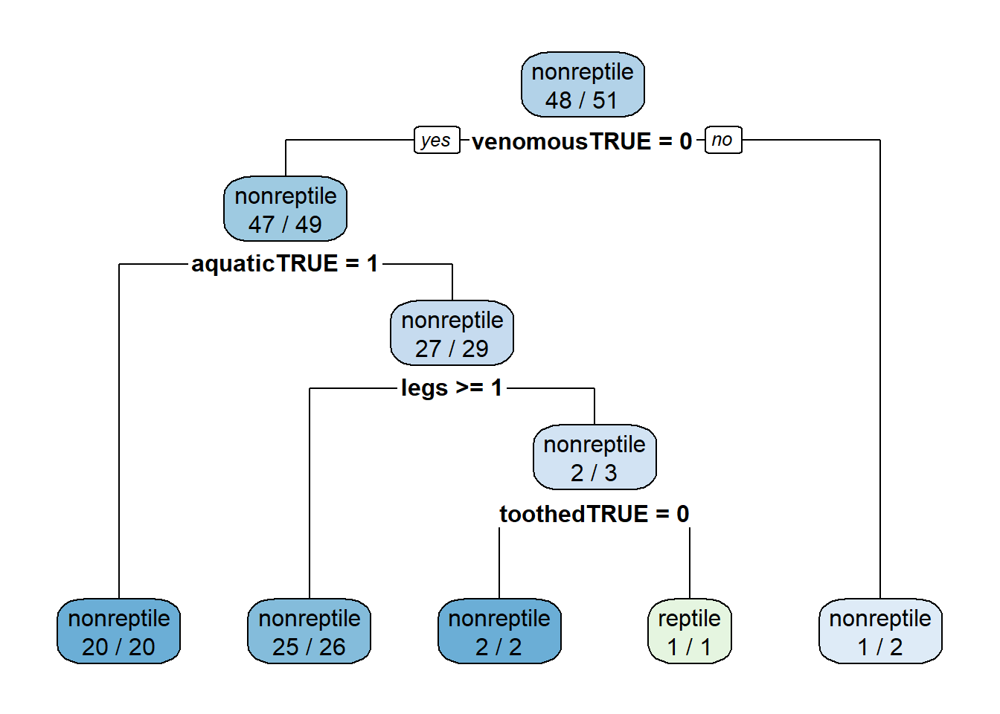
confusionMatrix(data = predict(fit, testing_reptile),
ref = testing_reptile$type, positive = "reptile")Confusion Matrix and Statistics
Reference
Prediction nonreptile reptile
nonreptile 48 2
reptile 0 0
Accuracy : 0.96
95% CI : (0.8629, 0.9951)
No Information Rate : 0.96
P-Value [Acc > NIR] : 0.6767
Kappa : 0
Mcnemar's Test P-Value : 0.4795
Sensitivity : 0.00
Specificity : 1.00
Pos Pred Value : NaN
Neg Pred Value : 0.96
Prevalence : 0.04
Detection Rate : 0.00
Detection Prevalence : 0.00
Balanced Accuracy : 0.50
'Positive' Class : reptile
Note: Accuracy is high, but it is close or below to the no-information rate!
We can create a classifier which will detect more reptiles at the expense of misclassifying non-reptiles. This is equivalent to increasing the cost of misclassifying a reptile as a non-reptile. The usual rule is to predict in each node the majority class from the test data in the node. For a binary classification problem that means a probability of >50%. In the following, we reduce this threshold to 1% or more. This means that if the new observation ends up in a leaf node with 1% or more reptiles from training then the observation will be classified as a reptile. The data set is small and this works better with more data.
prob <- predict(fit, testing_reptile, type = "prob")
tail(prob) nonreptile reptile
tuna 1.0000000 0.00000000
vole 0.9615385 0.03846154
wasp 0.5000000 0.50000000
wolf 0.9615385 0.03846154
worm 1.0000000 0.00000000
wren 0.9615385 0.03846154pred <- as.factor(ifelse(prob[,"reptile"]>=0.01, "reptile", "nonreptile"))
confusionMatrix(data = pred,
ref = testing_reptile$type, positive = "reptile")Confusion Matrix and Statistics
Reference
Prediction nonreptile reptile
nonreptile 13 0
reptile 35 2
Accuracy : 0.3
95% CI : (0.1786, 0.4461)
No Information Rate : 0.96
P-Value [Acc > NIR] : 1
Kappa : 0.0289
Mcnemar's Test P-Value : 9.081e-09
Sensitivity : 1.00000
Specificity : 0.27083
Pos Pred Value : 0.05405
Neg Pred Value : 1.00000
Prevalence : 0.04000
Detection Rate : 0.04000
Detection Prevalence : 0.74000
Balanced Accuracy : 0.63542
'Positive' Class : reptile
Note that accuracy goes down and is below the no information rate. However, both measures are based on the idea that all errors have the same cost. What is important is that we are now able to find more reptiles.
Since we have a binary classification problem and a classifier that predicts a probability for an observation to be a reptile, we can also use a receiver operating characteristic (ROC) curve. For the ROC curve all different cutoff thresholds for the probability are used and then connected with a line. The area under the curve represents a single number for how well the classifier works (the closer to one, the better).
library("pROC")
r <- roc(testing_reptile$type == "reptile", prob[,"reptile"])Setting levels: control = FALSE, case = TRUESetting direction: controls < casesr
Call:
roc.default(response = testing_reptile$type == "reptile", predictor = prob[, "reptile"])
Data: prob[, "reptile"] in 48 controls (testing_reptile$type == "reptile" FALSE) < 2 cases (testing_reptile$type == "reptile" TRUE).
Area under the curve: 0.7656ggroc(r) + geom_abline(intercept = 1, slope = 1, color = "darkgrey")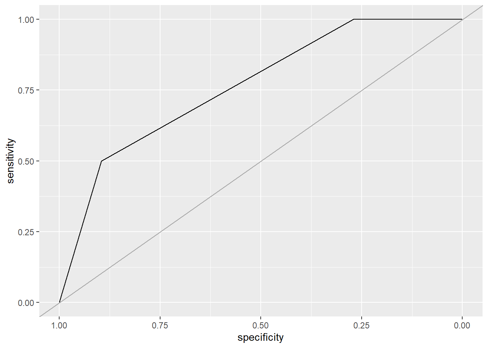
The implementation of CART in rpart can use a cost matrix for making splitting decisions (as parameter loss). The matrix has the form
TP FP FN TN
TP and TN have to be 0. We make FN very expensive (100).
cost <- matrix(c(
0, 1,
100, 0
), byrow = TRUE, nrow = 2)
cost [,1] [,2]
[1,] 0 1
[2,] 100 0fit <- training_reptile |>
train(type ~ .,
data = _,
method = "rpart",
parms = list(loss = cost),
trControl = trainControl(method = "cv"))The warning "There were missing values in resampled performance measures" means that some folds did not contain any reptiles (because of the class imbalance) and thus the performance measures could not be calculates.
fitCART
51 samples
16 predictors
2 classes: 'nonreptile', 'reptile'
No pre-processing
Resampling: Cross-Validated (10 fold)
Summary of sample sizes: 46, 46, 46, 45, 46, 45, ...
Resampling results:
Accuracy Kappa
0.4766667 -0.03038961
Tuning parameter 'cp' was held constant at a value of 0rpart.plot(fit$finalModel, extra = 2)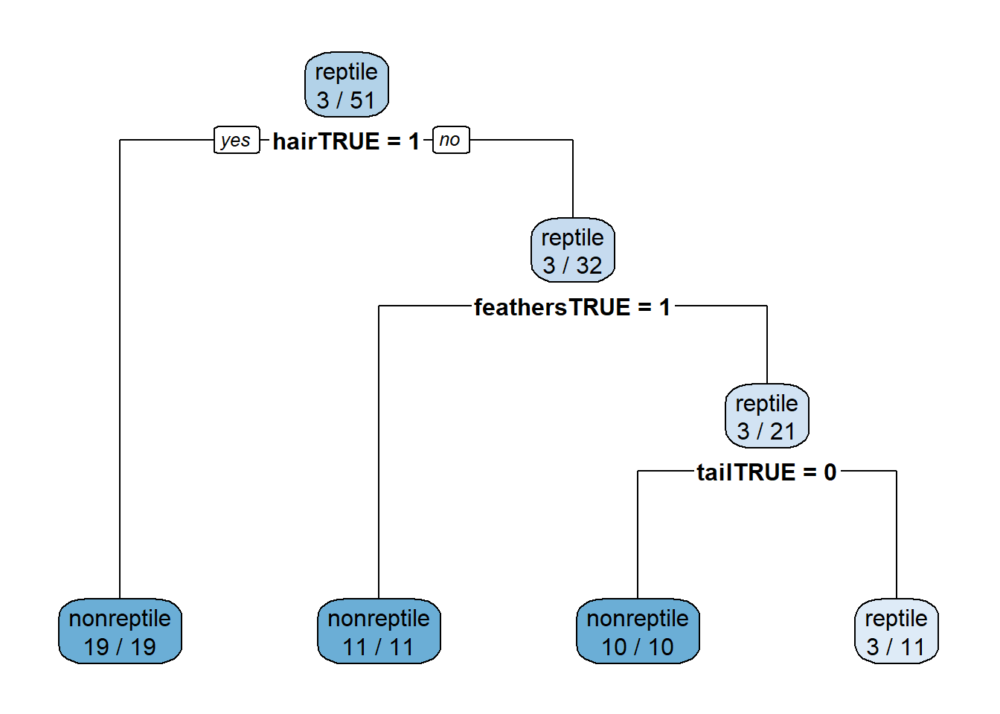
confusionMatrix(data = predict(fit, testing_reptile),
ref = testing_reptile$type, positive = "reptile")Confusion Matrix and Statistics
Reference
Prediction nonreptile reptile
nonreptile 39 0
reptile 9 2
Accuracy : 0.82
95% CI : (0.6856, 0.9142)
No Information Rate : 0.96
P-Value [Acc > NIR] : 0.999975
Kappa : 0.2574
Mcnemar's Test P-Value : 0.007661
Sensitivity : 1.0000
Specificity : 0.8125
Pos Pred Value : 0.1818
Neg Pred Value : 1.0000
Prevalence : 0.0400
Detection Rate : 0.0400
Detection Prevalence : 0.2200
Balanced Accuracy : 0.9062
'Positive' Class : reptile
The high cost for false negatives results in a classifier that does not miss any reptile.
Note: Using a cost-sensitive classifier is often the best option. Unfortunately, the most classification algorithms (or their implementation) do not have the ability to consider misclassification cost.
I did not add much comments here as the tutorial was already well explained. I will add more comments when I use this template with a different data set in HW3